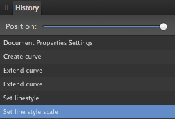

Панель «История» предназначена для отображения всех изменений и состояний документа в виде списка записей с подписями. С помощью этой панели можно быстро и легко вернуться на более ранний этап работы над проектом.
На панели «История» отображаются все внесенные изменения. Наиболее ранние состояния приведены в самой верхней части списка. Во время редактирования новые состояния добавляются в нижней части списка.

Если вы нажмете более раннее состояние, а затем внесете какие-либо изменения, любые состояния, которые были созданы позднее, будут удалены.
На панели доступны приведенные далее параметры.